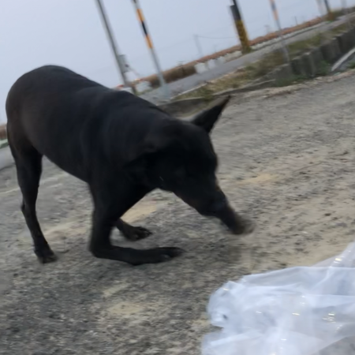

<!-- 流浪救援 -->
流浪救援 <!DOCTYPE HTML>
<!--
	Minimaxing by HTML5 UP
	html5up.net | @ajlkn
	Free for personal and commercial use under the CCA 3.0 license (html5up.net/license)
-->
<html>
    
<head>
	<title>浪跡天涯</title>
	<meta charset="utf-8" />
	<meta name="viewport" content="width=device-width, initial-scale=1, user-scalable=no" />

	<link rel="stylesheet" href="https://cdn.staticfile.org/twitter-bootstrap/3.3.7/css/bootstrap.min.css">
	<script src="https://cdn.staticfile.org/jquery/2.1.1/jquery.min.js"></script>
	<script src="https://cdn.staticfile.org/twitter-bootstrap/3.3.7/js/bootstrap.min.js"></script>

	<link rel="stylesheet" href="https://maxcdn.bootstrapcdn.com/bootstrap/4.0.0/css/bootstrap.min.css"
		integrity="sha384-Gn5384xqQ1aoWXA+058RXPxPg6fy4IWvTNh0E263XmFcJlSAwiGgFAW/dAiS6JXm" crossorigin="anonymous">
	<link rel="stylesheet" href="assets/css/main.css" />


	<script src="assets/js/jquery.min.js"></script>


</head>

<body>


	<div id="page-wrapper">

		<!-- 匯入NAVBAR  -->
		<div id="navbar"></div>
		<script>
			$(document).ready(function () {
				$("#navbar").load("myscript/navbar.html");//以ID找DOM，更改裡面的html
			});
		</script>
		<!-- 匯入NAVBAR  END -->


	


		<!-- Main -->
		<div id="main">
			<div class="container">
				<div class="row main-row">

				


					<!-- 點進後的救援詳細資料 -->
					<div class="col-9 col-12-medium">

						<section>
							<h2> 2/10晚上在中興大學附近撿到親人品種貓</h2>
							
							<ul class="big-image-list">
								<li>
									
									<small>救援案件編號： R2022022103<br>
										建立日期：2022-02-18</small> <br><br>
									<h2> 
										2/10晚上在中興大學附近撿到親人品種貓</h2>
									動物類別： 狗	 <br><br>
									動物數量： 1 <br><br>

									縣市鄉鎮區： 台中市南區 <br><br>
									救援需求： 傷病就醫  <br><br>
									通報人可負擔事項： 可提供安置照顧空間<br>

								</li>

							</ul>
						</section>

						<hr>

						<div >
							<div class="panel-heading">
								<h4 class="panel-title">
									<a data-toggle="collapse" data-parent="#accordion" href="#collapseThree">
										詳細資料	
									</a>
								</h4>
							</div>
							<div id="collapseThree" class="panel-collapse collapse">
								<div class="panel-body">
									發現地點，沒地址，可以電話聯絡XXX
									離附近不遠處明顯標的物：嘉義縣布袋鎮貴林國小。
								</div>
							</div>
						</div>

						<script type="text/javascript">
				
							$(function () { $('#collapseThree').collapse('toggle')});
						
						</script>  
						<hr>

						<div>
							<div class="panel-heading">
								<h4 class="panel-title">
									<a data-toggle="collapse" data-parent="#accordion" href="#collapsefour">
									救援原因	
									</a>
								</h4>
							</div>
							<div id="collapsefour" class="panel-collapse collapse">
								<div class="panel-body">
									上班途中，附近都是田地，沒有遮蔽物，車輛車速都開很快，它駁腳要閃車很危險
								</div>
							</div>
						</div>

						<script type="text/javascript">
				
							$(function () { $('#collapsefour').collapse('toggle')});
						
						</script>  


					</div>
					<!-- 點進後的救援詳細資料  END-->

					<div class="col-3 col-12-medium">
						<!-- 下半部右側相關連結 -->
						<div id="rightspace"></div>

					</div>
				</div>
			</div>
		</div>

		<!-- 匯入Footer  -->
		<div id="footer">
		</div>

	</div>

	<script>
		$(document).ready(function () {
			$("#navbar").load("myscript/navbar.html");//以ID找DOM，更改裡面的html
			$("#research").load("myscript/research.html");//以ID找DOM，更改裡面的html
			$("#rightspace").load("myscript/rightspace.html");//以ID找DOM，更改裡面的html    右側連結
			$("#footer").load("myscript/footer.html");//以ID找DOM，更改裡面的html
		});
	</script>


</body>

</html>


